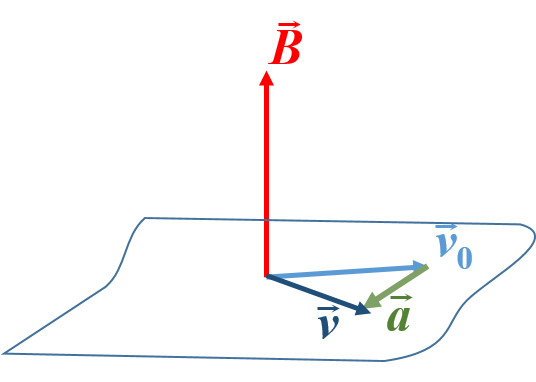

El campo magnético
El fenómeno del magnetismo se conoce desde la Antigüedad. Ya entonces se conocía que ciertos materiales como la magnetita poseen la propiedad de atraer trozos de hierro. Esta atracción no es de origen electrostático, ya que aparece aun en la ausencia de carga neta.
Los materiales que poseen esta propiedad se llaman imanes. Los imanes se componen de dos polos, usualmente denominados norte y sur, de modo que si acercamos los polos norte de dos imanes, éstos se repelen. Lo mismo ocurre si acercamos los polos sur. En cambio, si acercamos el polo sur de un imán con el norte del otro, se atraerán.
Hay materiales que pueden convertirse en imanes temporalmente, al ponerlo en contacto con otro imán. Se les denomina imanes artificiales. Por ejemplo, la aguja de una brújula es un imán artificial. Una vez imantada, la aguja apuntará su polo sur hacia el norte geográfico, puesto que la Tierra es como un gran imán orientado de norte a sur.
La región de influencia de un imán se conoce como CAMPO MAGNÉTICO. En esta región se suelen representar unas líneas. En cada punto, estas líneas llevan la dirección que tendría una aguja imantada colocada en dicho punto. En la siguiente figura se muestran dos ejemplos: el campo magnético de un imán natural (izquierda) y el campo magnético terrestre (derecha).
{kind=link}
Está claro que el campo magnético se deja sentir no sólo donde están las líneas, sino en toda la región del espacio. El número de líneas que se representan depende de la intensidad del campo, siendo mayor el número de líneas en las zonas donde el campo es mayor. Por ejemplo, en el dibujo anterior se señalan dos puntos (1) y (2). Obsérvese que la distancia entre las líneas de campo es mayor en el punto (2), lo cual implica que la intensidad del campo en ese punto es menor.
El campo magnético es un campo vectorial. Es decir, en cada punto, el campo tiene una intensidad y una dirección, y se representa por \(\vec{B}\).
La unidad de la intensidad del campo magnético en el S.I. es el Tesla (T).
Fuerza magnética sobre cargas en movimiento
Como ya hemos dicho, los materiales magnéticos modifican su posición cuando se encuentran en presencia de un campo magnético, orientando sus polos en la dirección del campo. Para que este movimiento tenga lugar, es necesario que actúe sobre ellos una fuerza, que es la fuerza magnética.
Esta fuerza magnética no sólo actúa sobre los materiales magnéticos. También lo hace sobre cargas eléctricas en movimiento. Así, si tenemos una carga en reposo en el seno de un campo magnético, no actuará sobre ésta ninguna fuerza, pero si se está moviendo, entonces actuará una fuerza sobre ella. Esta fuerza tiene varias características:
Es perpendicular a la dirección del campo.
Es perpendicular a la dirección del movimiento de la carga.
Es proporcional al campo, la velocidad de la carga y a la propia carga.
La expresión que representa todas estas características es la llamada Ley de Lorentz:
\[\fbox{$\vec{F}=q\vec{v}\times\vec{B}$}\]De aquí podemos obtener ya una definición de Tesla: Es la fuerza que experimenta una carga de 1 C cuando se mueve a una velocidad de 1 m/s en la dirección perpendicular al campo.
Del ejemplo en la figura 1 se deduce también que en general, los campos, y por tanto la fuerza experimentada por cuerpos cargados, no tienen por qué tener el mismo valor ni en intensidad ni en dirección en todos los puntos del espacio. Pero como punto de partida nos situaremos de aquí en adelante en el caso más sencillo: campo magnético homogéneo, es decir, con el mismo valor en toda la región de influencia. Para representarlo lo indicaremos con un único vector en un extremo de la figura, con la dirección del campo. Además, si el campo es perpendicular a la pantalla, lo indicaremos con un punto si la dirección es hacia nosotros y una cruz si se aleja.
Veamos en esta situación cómo calcular la fuerza (y por tanto la aceleración). De la ley de Lorentz se deduce que la fuerza es nula en los siguientes casos:
Carga en reposo (su velocidad es cero).
Carga que se mueve en la dirección del campo. La ley de Lorentz es un producto vectorial, y el producto vectorial de dos vectores paralelos es nulo.
Si lo que deseamos conocer es la intensidad de la fuerza, entonces un modo sencillo de calcularlo es utilizar la forma más compacta del producto vectorial: \(|\vec{a}\times\vec{b}|=|\vec{a}||\vec{b}|\sin[\theta]\). La dirección es la perpendicular al plano formado por ambos vectores. Para saber el sentido hay que seguir la regla del tornillo o de la mano derecha. Aquí usaremos la de la mano derecha, véanse algunos ejemplos en la figura 2
{kind=link}
Para aplicar esta regla, debe ponerse la mano derecha con los dedos índice-anular en la dirección del primer vector de modo que al cerrar el puño estos dedos se dirijan hacia el segundo vector. En esta posición, el pulgar indica la dirección del producto vectorial.
En nuestro caso, el vector \(q\vec{v}\) juega el papel de \(\vec{a}\) y el vector \(\vec{B}\) el papel del vector \(\vec{b}\). Esto quiere decir que si tenemos una carga positiva, el sentido de la fuerza es el mismo que el del producto \(\vec{v}\times\vec{B}\), mientras que si la carga es negativa, entonces el sentido de la fuerza es el opuesto al producto \(\vec{v}\times \vec{B}\), tal y como se muestra en la figura 3.
{kind=link}
Cálculo de fuerzas magnéticas 1
Es posible también calcular la fuerza utilizando las coordenadas cartesianas de los vectores involucrados. Recordemos que, si \(\vec{a}=a_x\hat{\imath}+a_y\hat{\jmath}+a_z\hat{k}\) y \(\vec{b}=b_x\hat{\imath}+b_y\hat{\jmath}+b_z\hat{k}\), entonces:
\[\vec{a}\times\vec{b}=\begin{vmatrix} \hat{\imath} & \hat{\jmath} & \hat{k}\\ a_x & a_y & a_z\\ b_x & b_y & b_z \end{vmatrix}=\begin{vmatrix} a_y & a_z\\ b_y & b_z \end{vmatrix}\hat{\imath}-\begin{vmatrix} a_x & a_z\\ b_x & b_z \end{vmatrix}\hat{\jmath}+\begin{vmatrix} a_x & a_y\\ b_x & b_y \end{vmatrix}\hat{k}\]Profundicemos un poco más. En caso de que el vector velocidad forme un cierto ángulo \(\theta\) con el campo, entonces la fuerza magnética tendrá por módulo:
\[F_m=q|\vec{v}\times \vec{B}|=qvB\sin\theta\]{kind=link}
Tal y como se muestra en la figura 4, \(v\sin\theta\) es la componente de la velocidad perpendicular al campo, \(v_\perp\), por lo que concluimos que:
Sólo la componente de la velocidad perpendicular al campo magnético producirá algún efecto en el cálculo de la fuerza magnética
Podemos verlo también vectorialmente. Si observamos de nuevo la figura, vemos que la velocidad la podemos descomponer como suma vectorial de dos vectores paralelo (\(\parallel\)) y perpendicular (\(\perp\)) al campo:
\[\vec{v}=\vec{v}_\parallel+\vec{v}_\perp\]Si por ejemplo, el campo magnético lleva la dirección OZ, entonces:
\[\vec{v_\parallel}=v_z\hat{k}\] \[\vec{v}_\perp=v_x\hat{\imath}+v_y\hat{\jmath}\]La fuerza de Lorentz podemos descomponerla así:
\[\vec{F}=q\vec{v}\times\vec{B}=q\vec{v}_\parallel\times\vec{B}+q\vec{v}_\perp\times\vec{B}\]El primer sumando es nulo y se llega a la misma conclusión. La fuerza magnética es independiente de la componente de la velocidad paralela al campo.
En el caso de que uno de los vectores, la velocidad, el campo magnético, o ambos, tenga una sola componente cartesiana, el producto vectorial se puede hacer de un modo más rápido. Tal y como se muestra en el esquema de la figura 5, si aplicamos la regla de la mano derecha a cualesquiera dos vectores unitarios perpendiculares, entonces obtenemos el vector restante. Es decir, si giramos en el sentido antihorario nos da un producto positivo, si lo hacemos en el sentido horario, negativo. En la figura de la izquierda se muestra un ejemplo, \(\hat{\jmath}\times\hat{k}\), y en la figura de la derecha un resumen de todas las opciones.
{kind=link}
Todas estas opciones se pueden resumir en las siguientes igualdades:
\[\begin{matrix} \hat{\imath}\times\hat{\jmath}=\hat{k} & \hat{\jmath}\times\hat{k}=\hat{\imath} & \hat{k}\times\hat{\imath}=\hat{\jmath}\\ \hat{\jmath}\times\hat{\imath}=-\hat{k} & \hat{\imath}\times\hat{k}=-\hat{\jmath} & \hat{k}\times\hat{\jmath}=-\hat{\imath} \end{matrix}\] \[\hat{\imath}\times\hat{\imath}=\hat{\jmath}\times\hat{\jmath}=\hat{k}\times\hat{k}=0\]Con esta idea en mente, el ejemplo anterior sería, \(\vec{v}\times\vec{B}=v_y\hat{\jmath}\times B_x\hat{\imath}\), puesto que el resto de componentes cartesianas son cero. Reordenando:
\[\vec{v}\times\vec{B}=v_yB_x\hat{\jmath}\times\hat{\imath}=15\times 10^{-3} (-\hat{k})\mbox{ N}=-15\times 10^{-3}\hat{k}\mbox{ N}\]Cálculo de fuerzas magnéticas 2
Hemos visto que la fuerza magnética es siempre perpendicular a la dirección de movimiento de la carga. La aceleración que produce no actúa aumentando ni disminuyendo la velocidad, sino cambiándola de dirección, es decir:
La fuerza magnética es una fuerza centrípeta.En ausencia de otras fuerzas, si una carga se mueve inicialmente perpendicularmente al campo magnético, realizará trayectorias circulares, tal y como se muestra esquemáticamente en la figura 6:
{kind=link}
El radio \(r\) de esta trayectoria se puede calcular también. El ángulo entre \(\vec{v}\) y \(\vec{B}\) es 90\(^\circ\), por lo que \(|\sin \vec{v}\vec{B}|=1\). Por lo tanto:
Se trata de una aceleración centrípeta: \(F=m\frac{v^2}{r}\), por lo que:
\[|q|vB=m\frac{v^2}{r}\]Como hemos dicho que el módulo de la velocidad permanece inalterado, despejando de la ecuación anterior:
\[r=\frac{mv^2}{|q|vB}=\frac{mv}{|q|B}\]Y la velocidad angular será:
\[\omega=\frac{v}{r}=|q|B/m\]Esta propiedad se usa en la práctica, en los espectrómetros de masa (para medir masas muy pequeñas) y en el acelerador de partículas o ciclotrón, en los que se usa esta propiedad para proporcionar elevadas velocidades angulares a pequeñas cargas. Por ese motivo, a esta frecuencia \(\omega=|q|B/m\) se le llama frecuencia ciclotrón.
Además, dado que la fuerza es también perpendicular al campo magnético, la carga se moverá siempre en el plano perpendicular. En efecto, \(\vec{v}=\vec{v}_0+\vec{a}t\), y la aceleración, al igual que la fuerza, siempre está en la dirección perpendicular al campo. Por tanto, si inicialmente la velocidad no tiene ninguna componente en la dirección de \(\vec{B}\), tampoco la tendrá después. Esto se ilustra en la figura 7:
{kind=link}

Esquema de la velocidad de una carga en el seno de un campo magnético perpendicular, en dos instantes de tiempo \(\vec{v}_0\) y \(\vec{v}\) y de la aceleración que experimenta.
Puede darse el caso de que la carga no se mueva inicialmente perpendicularmente al campo magnético. Por ejemplo, sea el campo magnético en la dirección x: \(\vec{B}=B\hat{\imath}\) (ver figura inferior). Si la carga tiene una velocidad \(\vec{v}=v\hat{\jmath}\), entonces estaríamos en el ejemplo anterior, campo y velocidad de la carga perpendiculares. Si en cambio, la velocidad no es perpendicular, entonces podemos separarla en dos componentes, una paralela y una perpendicular. En este ejemplo, tendríamos \(\vec{v}=\vec{v}_\perp+v_\parallel\hat{\imath}\) (figura 8A).
{kind=link}
Distintos instantes de la trayectoria helicoidal de una carga que se mueve en una dirección no perpendicular al campo magnético
Como la aceleración es perpendicular al campo, sólo hace variar \(\vec{v}_\perp\), mientras que la otra componente no varía (obsérvese que en todos los casos \(\vec{v}_\parallel\) es la misma).
En A, \(\vec{v}_\perp\) lleva la dirección \(\hat{\jmath}\), por lo que la fuerza de Lorentz le imprime una aceleración a la carga \(\vec{a}\) dirigida en dirección \(-\hat{k}\): la carga se desvía de su trayectoria horizontal tal y como indica la flecha discontinua gris. En B y C se indican momentos posteriores de la trayectoria.
Puesto que \(\vec{v}_\parallel\) no varía la carga avanza en la dirección x y a la vez gira en torno al eje dado por la dirección del campo magnético. Por ejemplo, trascurrido un tiempo nos encontramos en la situación dibujada en B. La carga ha avanzado en la dirección x y se encuentra ahora en la posición indicada por la carga en negro con \(\vec{v}_\perp\) en la dirección \(-\hat{k}\). La aceleración ahora lleva la dirección \(-\hat{\jmath}\), por lo que la carga se desvía en la misma dirección.
De nuevo, transcurrido un tiempo la carga se encuentra en la posición indicada en C: \(\vec{v}_\perp\) en la dirección \(-\hat{\jmath}\) y por tanto aceleración en la dirección \(\hat{k}\), completando poco a poco la trayectoria circular.
En D se muestra la trayectoria realizada: el movimiento consta de dos partes, una paralela al campo con velocidad constante \(v_\parallel\hat{\imath}\), esto es, un movimiento rectilíneo uniforme y otra componente consistente en un movimiento circular en el plano perpendicular al campo. La composición de ambos movimientos será un movimiento helicoidal.
En la práctica se puede dar la situación en la que existe al mismo tiempo un campo eléctrico y un campo magnético. Por lo tanto, sobre una carga eléctrica actuará una fuerza electrostática y una fuerza magnética. La expresión de la fuerza de Lorentz generalizada será:
\[\vec{F}=q\left(\vec{E}+\vec{v}\times{B}\right)\]Cálculo de fuerzas magnéticas 3
Fuerza magnética sobre corrientes
La corriente eléctrica no es más que cargas eléctricas en movimiento, por lo que si situamos un conductor por el que pasa una corriente en un campo magnético, éste ejercerá una fuerza magnética sobre el conductor. Según la ley de Lorentz, esta fuerza debe ser perpendicular al campo y a la dirección de movimiento de las cargas, es decir, perpendicular al eje del conductor.
Corriente rectilínea
Sea un segmento de conductor de una cierta longitud \(l\) por el que circula una corriente de intensidad \(I\). Podemos construir un vector \(\vec{l}\) que tenga la longitud del conductor y dirección la de la corriente (ver figura 9). Entonces, la fuerza sobre eléctrica sobre el conductor viene dada por:
\[\fbox{$\vec{F}=I(\vec{l}\times\vec{B})$}\]{kind=link}
En definitiva:
La fuerza es perpendicular al conductor.
El sentido es el del productor vectorial \(\vec{l}\times\vec{B}\).
El módulo es \(|\vec{F}|=IlB\sin\theta\).
Fuerza sobre una espira cuadrada
Supongamos que tenemos una espira cuadrada perpendicular al campo magnético, tal y como se muestra en la figura A. Entonces sobre cada sección del conductor tendremos una dirección diferente de la fuerza, tal y como se indica en la figura 10.
{kind=link}
En efecto, sobre los tramos laterales el campo magnético es el mismo y también su longitud. Pero el sentido de la corriente, y por tanto de la fuerza, es opuesto. Lo mismo ocurre con los tramos horizontales.
Las fuerzas se anulan dos a dos y por tanto la espira no se desplaza.
Si en cambio, la espira no es perpendicular (figura B), vemos que las fuerzas sobre los tramos laterales ejercen un momento \(\vec{M}\) que hace girar la espira. Este es el fundamento de los motores eléctricos: se hace pasar corriente por una espira situada en un campo magnético como el creado por un imán. En el momento que empieza a pasar corriente, la fuerza magnética fuerza a la espira y todo lo que esté ligado a ella a girar.
Campo creado por cargas en movimiento
Campo creado por una carga puntual
El campo magnético se genera de forma natural en cierto tipo de materiales, llamados ferromagnéticos. Además, las cargas eléctricas, por el hecho de estar en movimiento, generan un campo magnético. Esto fue descubierto por el científico danés Öersted (1820). Este científico observó que las corrientes eléctricas se comportaban como imanes, desviando las agujas imantadas de una brújula.
Este campo no es uniforme, es decir, no es igual en todos los puntos del espacio, sino que depende de la distancia a la carga. En el caso de una carga en movimiento \(q\) que se mueve a una velocidad \(\vec{v}\), el campo magnético que genera en un punto P del espacio sigue la expresión:
\[\fbox{$\vec{B}=\frac{\mu}{4\pi}\frac{q}{r^3}\vec{v}\times\vec{r}$}\]donde \(\mu\) es una constante característica del medio llamada "permeabilidad magnética" (su valor en el caso del vacío es \(\mu=4\pi\cdot 10^{-7} \mbox{ N/A}^2\)) y \(\vec{r}\) es el vector que va desde la carga hasta el punto P (ver figura 11A)

Esquema de los elementos que intervienen en el cálculo del campo magnético creado por una carga
De esta expresión podemos deducir que:
El campo magnético es el mismo en todos los puntos que equidistan de la carga. En la figura B se puede ver que esos puntos forman una circunferencia en torno al eje formado por el vector velocidad.
La dirección del campo magnético generado está en los planos definidos por dicha circunferencia (ha de ser perpendicular a la velocidad) como se ve en la figura C.
Ha de ser perpendicular al vector \(\vec{r}\), es decir, son tangentes a dicha circunferencia (figura D).
Finalmente, vemos que las líneas de campo magnético son circunferencias contenidas en planos perpendiculares a la trayectoria de la carga. Si la carga es positiva, el sentido de giro es el marcado por la regla de la mano derecha (figura E). Si es negativa, entonces el sentido es el opuesto.
El sentido de giro también se puede obtener dirigiendo el pulgar en la dirección de movimiento de la carga. El sentido de cierre de la mano es el sentido del campo magnético (figura F).
EJEMPLO 1: Calcular el campo creado en el punto P de posición \(\vec{r}_P=1.5\hat{\jmath}\) m, por una carga \(q=-2\mu\)C que se encuentra en la posición \(\vec{r_q}=1\hat{\jmath}\) m con una velocidad \(\vec{v}=2\hat{\jmath}\) m/s
EJEMPLO 2: Calcular el campo creado en el punto P de posición \(\vec{r}_P=1.5\hat{\jmath}\) m, por una carga \(q=-2\mu\)C que se encuentra en la posición \(\vec{r}_q=1\hat{\jmath}+2\hat{k}\) m con una velocidad \(\vec{v}=2\hat{\jmath}\) m/s.
Campo creado por una corriente rectilínea
Dirección y sentido del campo magnético creado
Dado que una corriente eléctrica son cargas que se mueven por un conductor eléctrico, es de esperar que el campo sea parecido al que se obtiene por una carga. Es decir, el campo magnético creado por una corriente \(I\) son circunferencias que rodean al conductor y que siguen la dirección indicada por la mano derecha, tal y como se muestra en la figura 12.
{kind=link}
Módulo del campo
Se puede entender intuitivamente que a mayor intensidad de corriente \(I\), mayor número de cargas tenemos en movimiento y por lo tanto el campo ha de ser proporcional a dicha intensidad. El módulo del campo magnético se determina mediante la llamada ley de Biot y Savart:
\[\fbox{$B=\frac{\mu I}{2\pi r}$}\]Fuerza entre corrientes paralelas
Anteriormente vimos que una corriente rectilínea en presencia de un campo magnético experimenta una fuerza perpendicular a la línea. Por tanto, si acercamos dos corrientes rectilíneas existirá una fuerza sobre una de ellas debida al campo magnético generado por la otra y viceversa. Esta fuerza es perpendicular a las líneas y será de repulsión o atracción según la dirección de las corrientes:
Corrientes en el mismo sentido (figura A). En la figura A izquierda se ha destacado en rojo el campo magnético \(\vec{B}_1\) generado por la corriente 1 en un punto situado sobre un elemento de la corriente 2. Esta corriente experimenta una fuerza \(\vec{F}_{1-2}\) (fuerza que la corriente 1 ejerce sobre la corriente 2) en el sentido negativo del eje OX. Es de ATRACCIÓN. Se destaca en la figura A derecha en naranja el campo magnético \(\vec{B}_2\) generado por la corriente 2 en un punto situado sobre un elemento de la corriente 1. Esta corriente experimenta una fuerza \(\vec{F}_{2-1}\) (fuerza que la corriente 2 ejerce sobre la corriente 1) en sentido positivo del eje OX. Es de ATRACCIÓN. Naturalmente, por la ley de acción-reacción, ambas fuerzas han de ser iguales y de sentido opuesto.
Corrientes antiparalelas (figura B). En la figura B izquierda se ha destacado en rojo el campo magnético \(\vec{B}_2\) generado por la corriente 1 en un punto situado sobre un elemento de la corriente 2. Al ser la corriente 1 igual al ejemplo anterior, el campo es también el mismo. Sin embargo, dado que ahora la corriente 2 se dirige hacia abajo, la fuerza es opuesta al ejemplo anterior, en la dirección positiva del eje OX. Es de REPULSIÓN. Se destaca en la figura B derecha en naranja el campo magnético \(\vec{B}_2\) generado por la corriente 2 en un punto sobre un elemento de la corriente 1. Teniendo de nuevo en cuenta la regla de la mano derecha, encontramos que la fuerza \(\vec{F}_{2-1}\) sigue la dirección negativa del eje OX. Es de repulsión. De nuevo comprobamos que se cumple la ley de acción y reacción.
{kind=link}
Campo magnético creado por un solenoide
Un solenoide es un conductor enrollado en torno a un cilindro (ver figura 13), de modo que su longitud es mucho mayor que el radio del cilindro. Se trata, pues, de un conjunto de \(N\) espiras, tantas como vueltas. El campo magnético que genera en el eje es un vector que lleva la dirección del eje y el sentido marcado por la regla de la mano derecha. Se calcula con la expresión:
\[\fbox{$B=N\frac{\mu I}{L}$}\]{kind=link}
Ejercicios de campos creados por cargas en movimiento
El flujo magnético a través de una superficie
El flujo es una magnitud que puede calcularse para cualquier campo vectorial y consiste en la suma del campo a todos los puntos de una superficie perpendicular a aquel. En este apartado vamos a aplicarlo al caso de un campo magnético.
Vector superficie
Previamente vamos a definir el vector superficie. Supongamos que trazamos una superficie imaginaria con un cierto área \(S\). Esta superficie podría ser la sustentada por una línea de corriente como la de la espira de la figura 14. El vector superficie asociado es un vector de módulo \(S\) y dirección PERPENDICULAR al plano de la superficie, tal y como se muestra en la misma figura:
{kind=link}
Naturalmente, si la superficie no es plana, entonces no se puede definir un único vector superficie para todo el área. En este caso, el vector superficie se define de manera local, para una porción de superficie infinitesimal \(\vec{dS}\) (ver figura 15). Al ser tan pequeña, la curvatura es despreciable y puede considerarse que la dirección es la misma en todos punto de este elemento de superficie.
{kind=link}
Para el cálculo del flujo magnético partamos del caso más sencillo:
Flujo magnético de un campo uniforme a través de una superficie plana \(\vec{S}\parallel\vec{B}\)
En este caso, el plano de la superficie es perpendicular al vector campo y por lo tanto el flujo, campo sumado a todo punto de la superficie, es simplemente:
\[\Phi=BS\]Flujo magnético de un campo uniforme a través de una superficie plana inclinada respecto del campo
Tal y como se muestra en la figura 16, en este caso, la superficie perpendicular \(S_\perp\) es la proyección de \(\vec{S}\) en el plano perpendicular al campo:
\[\Phi=BS_\perp=BS\cos\theta=\vec{B}\cdot\vec{S}\]{kind=link}
es decir, el producto escalar entre campo magnético y vector superficie.
Flujo magnético de un campo no uniforme a través de una superficie cualquiera
En este caso, no se puede realizar el cálculo directamente. Sí puede hacerse localmente. El flujo a través de una superficie elemental \(\vec{dS}\) contenida en la superficie de interés es:
\[d\Phi=\vec{B}\cdot\vec{dS}\]El flujo total a través de toda la superficie será la suma del flujo sobre cada elemento de superficie:
\[\Phi=\int_S\vec{B}\cdot\vec{dS}\]La unidad del flujo magnético es el Weber (Wb)
\[1 \mbox{ Wb}= 1 \mbox{ T·m}^2\]
Inducción electromagnética
Hemos visto que los campos magnéticos ejercen fuerzas sobre las cargas en movimiento. Vamos a ver a continuación que esto puede utilizarse para la generación de corriente eléctrica.
Ley de Faraday
Si situamos un conductor en el seno de un campo magnético, en determinadas circunstancias se puede producir una fuerza electromotriz entre los extremos que dé lugar a una corriente eléctrica. Faraday realizó diversas experiencias en las que se mostraba como un campo magnético podía genera corriente en una espira:
Imán que se acerca o aleja de una espira. El campo magnético que genera un imán no es uniforme, sino que disminuye en intensidad al alejarnos de él. Si acercamos o alejamos un imán a una espira, observaremos que se genera una corriente eléctrica en la espira.
Espira que se acerca o aleja de otra por la que circula una corriente. Si tenemos una espira por la que hacemos pasar una corriente, esta corriente genera un campo magnético qe de nuevo es no unirorme. Si acercamos o alejamos esta espira a otra, observaremos una corriente en la segunda espira.
También podemos conseguir una corriente en la segunda espira manteniendo la primera fija y utilizando un interrumptor que conecte y desconecte la corriente. Mientras se conecta o desconecta, varía el campo magnético y se produce una corriente en la segunda espira.
Existen más posibilidades:
Espira con un lado móvil (ver figura 17). Si ponemos una espira en un campo magnético uniforme y deslizamos uno de sus lados, entonces también se produce una corriente eléctrica.
Espira que gira. Si la espira gira en el seno de un campo magnético, entonces también se produce una fuerza electromotriz. (Este es el fundamento de la dinamo de una bicicleta)
{kind=link}
Vemos entonces que no es necesario que varíe el campo magnético. Basta con variar el área que sustenta la espira o el ángulo entre dicha superficie y el campo. Esto se resume en la ley de Faraday:
\[\varepsilon=-\frac{\mbox{d}\Phi}{\mbox{d}t}\]La unidad de la fuerza electromotriz es el voltio (V)
Es decir, la fuerza electromotriz que se genera en una espira es igual a la rapidez con la que varía el flujo magnético en la superficie sustentada por dicha espira y cambiada de signo.
Teniendo en cuenta que, en el caso de campo magnético homogéneo, \(\Phi=\vec{B}\cdot\vec{S}\), vemos que efectivamente, aparecerá una corriente cuando varíe el campo, el área sustentada por la espira o el ángulo entre ellas.
Para poder usar esta expresión seguiremos los siguientes pasos:
Definir el sentido del vector superficie. El vector superficie es perpendicular al área sustentada por la espira, pero no hay ningún criterio para elegir el sentido del vector. Escogemos uno cualquiera.
Usamos la regla de la mano derecha. Con el pulgar en la dirección escogida para \(\vec{S}\) el sentido de cierre del puño indica el sentido de la corriente positiva.
Calculamos el flujo magnético \(\Phi=\vec{B}\cdot\vec{S}\).
Utilizamos la ley de Faraday para obtener \(\varepsilon\).
Si \(\varepsilon\) es positivo, entonces la dirección de la corriente es la elegida con la regla de la mano derecha. Si se obtiene \(\varepsilon < 0\), entonces la dirección es la opuesta.
Consideremos el ejemplo de la siguiente figura. En este ejemplo, la espira es fija y rígida de área 100 cm\(^2\). El campo magnético es uniforme y de dirección fija pero su módulo varía con el tiempo siguiendo la expresión \(B=0.2\mbox{ Exp}[-2t]\) T. En la figura podemos ver los pasos antes indicados. En la figura A hemos escogido la dirección del vector superficie hacia arriba. Eso quiere decir que el sentido positivo de la corriente es el de la figura B. Como campo magnético y vector superficie son paralelos:
\[\Phi=\vec{B}\cdot\vec{S}=BS=0.2\mbox{Exp}[-2t]\mbox{ T }\cdot 100\cdot 10^{-4}\mbox{ m}^2=2\cdot 10^{-3}\mbox{Exp}[-2t]\mbox{ Wb}\]Calculamos ya la fuerza electromotriz:
\[\varepsilon=-\frac{\mbox{d}\Phi}{\mbox{d}t}=-2\cdot 10^{-3}\frac{\mbox{d}}{\mbox{d}t}\mbox{Exp}[-2t]=4\cdot 10^{-3}\mbox{Exp}[-2t]\mbox{ V}\]Vemos que se obtiene una cantidad positiva. Entonces la dirección de la corriente es la escogida en la figura B. Se trata de una corriente que decae exponencialmente con el tiempo.
Ejercicios de inducción electromagnética
Test para repasar
Volver a la página principal de Física